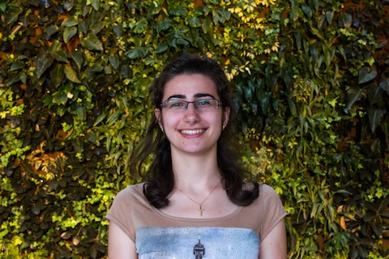

My name is Wilson Lam and I am the dearly loved iGEM president. I work in the lab, where I am ridiculed by my fantastic labmates for my chronic tendency to show up late. In fact, we have graphed my arrival time and found that I arrive later to the lab every day, but it's OK since I have a sleep app that justifies my absences. Sometimes I show up early (like, at noon), but it is only because they give out free lunch. I highly respect everybody in my lab and I would never take credit for their work or accomplishments, like filling all the tip boxes or obtaining free licenses of SnapGene. Cool beans.

My name is Yara Abou-Hamde and I will be starting my third year of university this fall. I am studying Biomedical Science with an Option in Medicinal Chemistry. Science is a huge part of who I am and it has been a truly exceptional experience working in the lab as part of iGEM this year. I learned so much about synthetic biology, scientific research and communication as it relates to a research environment. My colleagues and I have worked incredibly hard and I am grateful for both collective and individual efforts. I look forward to competing and meeting fellow iGEM teams!

My name is Dylan Siriwardena, however the question of who I am is a much more complicated question. Since it would take far too long for you (the reader) to glean an understanding of my very soul, I shall limit myself to the superficial. I am a third year Biology student, and I am currently working in the wet lab for this year's iGEM team. Being my first year in iGEM, I am excited to be a part of such a large international competition. My interests include rollerblading, history, martial arts, and hair care. I'm hoping to make a living somewhere in the field of Biology.

Martin Hanzel is starting his first year in Biomedical Science, and is involved in uOttawa's iGEM team as part of his Undergrad Research Scholarship. He works both in the lab and on the computer science team, and is the principal meme creator for iGEM. He thinks highly of his partners and lab mates and is excited to work on such a complex and innovative research project. His hobbies include travel, music, messing with the genetic code of organisms, and speaking in the third person.

My name is Peter Doan and I am a second year student at the University of Ottawa studying Mechanical Engineering and Computing Technology. This is my first year participating in the iGem team as a member of the dry lab team. With iGem, it has granted me great insight on what synthetic biology is all about. Outside of iGem, I enjoy exploring new things and places.

Hi, I'm Commander Shepard, and this is my favourite store on the citadel.
I'm Kevin Rutkay, a fourth year Software Engineering student and am a part of the dry lab team. This is my first year on the iGEM team; I found iGEM was a great way to learn more about biology, which is one field that is really missing from my studies. When I'm not staring at a computer, I enjoy photography, baking, and a nice cup of tea.
Hi, I'm Mohammed Chamma. I'm studying Mathematical Physics here at uOttawa and I'm going into my third year. In my free time I do lots of coding and software development. I'm on the dry lab of the iGEM uOttawa team where I mainly work on an app we're making called "Bricklayer". Having never taken a formal biology course, I joined iGEM in the hopes that I'll learn more about biology and especially DNA. So far it's been great; I've learned a ton and met lots of cool people along the way. I think that everything iGEM is about is great and I can't wait to see more.
Hi, my name is Cory Lefebvre and I'm a third year Biochemistry student. I've been with iGEM for two years now and I'm continuing in my role in graphic design as the head of the division. One of the major projects this year was the production of the children's book for our human practices division in which I helped by organizing and designing the book and its contents. I have a huge interest in cellular and synthetic biology making me a strong supporter of iGEM and its mission.
Hello! My name is Cailtlin and I'm a fourth year Biochemistry student at the University of Ottawa. This is my second year on the iGEM team, and I'm excited to be working on a children's book for this year's human practices project!
Hello! To introduce myself, my name is Leona Yiu and I am currently a fourth year Biopharmaceutical Sciences student, specializing in Genomics, at the University of Ottawa. This is my first year participating in the iGEM competition as part of the Human Practices team. So far, it has been a fun and rewarding experience taking part in the uOttawa iGEM team as it has allowed me the opportunity put my artistic skills to work as a co-illustrator of our children's book and gain further insight regarding synthetic biology and its numerous applications in the industry. Outside of iGEM, I enjoy long-distance running, photography, and music.
Hello! I'm Dina and this fall I'm going into my fourth year of Biopharmaceutical Science; specializing in Medicinal Chemistry. I am really excited to be part of the IGEM competition this year! I am taking part in the Human Practices as a co-illustrator of our children's book. This experience has definitely expanded my love and knowledge of both art and science. Anticipate the great work of our uOttawa IGEM team!
I'm Katie Harriman and I am a fourth year student in the Biopharmaceutical Sciences program where I have specialized in Medicinal Chemistry. Although I am a chemist by nature my interdisciplinary background has allowed me to become an integral part of the uOttawa iGEM Team. This year I took on the role of Human Practices Chair and collectively we have produced a full length children's book! I am excited to meet fellow iGEMers!

My name is Meshach David and I am a fourth year Biomedical Science student at the University of Ottawa. This is my first year participating in iGEM and I am a part of the human practices team. I'm also planning on winning "Most Beautiful" at the jamborees. That is all.
I am Daniel Tesolin and I'm going into my third year in Biochemistry. This summer, besides doing research in computational, medicinal and organic chemistry, I got to make some sweet rhymes for our iGEM children's book on synthetic biology. This is my first year on the uOttawa iGEM team as a member of human practices and it has proven to be an awesome experience. Can't wait for our team to win it all this year!
Yo internet people. I am Amir, a fourth year student in the University of Ottawa doing pretty much the same bio-something or other program as most of the other students on the team. Not to brag but the whole book writing and publishing process is kind of a big deal and I feel like we got this. For those of you out there who play League of Legends hit me up at Farnaz.

Yoyoyo broski! I'm Alexandra (Alex for short) and this is my first year taking part in iGEM. I'm part of the Human Practices team where I worked on making our children's book a happy bundle of rhymes that convey synthetic biology. I am going into my third year of Biochemistry and I enjoy learning new things, running and sports, dance, art, and music. Euroswag!
Hi, I'm Abdus and I'm going into my second year in Chemical Engineering and this is my first year on the uOttawa iGEM team. I am part of the Human Practices team where I played a part in writing the children's book. It has been a fun experience so far and I look forward to competing with other teams this fall!
Hi my name is Marina and I am a Biopharmaceutical science student at the University of Ottawa. I am part of the iGEM human practices team and our main goal is to expand scientific concepts to the general public, which has been a fun challenge with our children's book. As the saying goes - If you can't explain it simply, you don't understand it well enough.
Hey, my name is Kaitlin and I am a third year student studying Biomedical Science with an option in Cellular and Molecular Medicine. I have thoroughly enjoyed my first year participating on the iGEM team as part of human practices! I love the opportunity to learn about biology and its real world applications hands on and through peers instead of through professors in a classroom. I can't wait to present our hard work at the Jamboree and see what all the other iGEM teams have been up to!
Hi there, my name is Michael Xiang and this fall I will be in my 4th year at University of Ottawa studying Biochemistry and Computer Science. As part of this year's iGem team, I have been working on a children's book called "Mr. Cool's Microscopic Adventures". This book will be geared towards elementary students to inspire our youth in the field of synthetic biology =]

Hey! My name is Rizwan Awan and this fall I'll be starting my 2nd year of Health Sciences. This is my first year as a member of the uOttawa iGEM Team, Human Practices division, where I helped create the children's book and t-shirts. Besides academics, I love playing basketball, volleyball, and hitting the mats with some Jiu-Jitsu and Kickboxing. Being part of iGEM has been a wicked experience, and I'm looking forward to my first Jamboree!
Hello! My name is Nicholas Huang. This fall I will be entering my fourth year at the University of Ottawa studying Biochemistry. This will be my second year on the iGEM team, working in the Human Practices. iGEM has continued to be a wonderful experience and I hope that this year's turnout will be even better than the last!
My name is Fiatsogbe Dzuali, I'm a third year Biomedical Science student. It's my first year with uOttawa iGEM and I'm enjoying being a part of the human practices team for this year's project. I'm very intersted in many aspects of the life sciences, so getting the opportunity to learn more about synthetic biology while meeting others with similar interests was the major reason I chose to get involved with iGEM. I'm looking forward to an exciting year with the team!
He is called many names and has many hobbies. He is the one and only Shihab Sarwar. He is a member of the human practices group and loves everything about iGEM. One day, he hopes to become a scientist that will change the world for the better.
Greetings! I'm Curtis. Come fall I will be entering my second year as a Biomedical Sciences student. This will be my first time participating in the iGEM competition and I am excited to be a member of the uOttawa iGEM human practices team. Thus far not only has it has been truly interesting to learn about synthetic biology and its applications, but also being able to help create a fun children’s book about the subject is a wonderful experience. I eagerly look forward to this year’s competition!
Salutations! My name is Huy Tran and I'm a third year Biomedical Science student specializing in medicinal chemistry. And like last year, I utilize my skills to ensure our team is properly dressed (t-shirt design) and properly presented (poster design). In addition, I'm assisting the human practices team this year in the design and will-be published children's book. Other than researching all things synthetic chemistry, I enjoy alpine skiing and drinks with friends and colleagues.

My name is Warren and I am in my fourth year at the University of Ottawa studying Biochemistry and Chemical Engineering. It is my second year on the uOttawa iGEM team. Last year I helped in designing the team website and t-shirt. This year, I help out with sponsorship. Outside of iGEM research, I have worked in biomedical engineering research and currently work with mass spectrometry based proteomics.